Aether
"Design a brand identity for an original recovery drink."
Flowy typography paired with dark, natural tones gives this drink a dreamy and calming character. Inspired by the Northern Lights, the organic illustrations create a harmonious, balanced design.


Tea Break
"Redesign a functional object by making it ambiguous."
Tea Break portrays how people take time to rest nowadays. We tend to think that distracting ourselves, by scrolling on a phone for example, is taking a break, but it is actually the exact opposite. Our brain remians active, which is why we feel so tired at the end of the day. With this concept, I want to emphasize that we should listen to our bodies and explore what true rest really means.
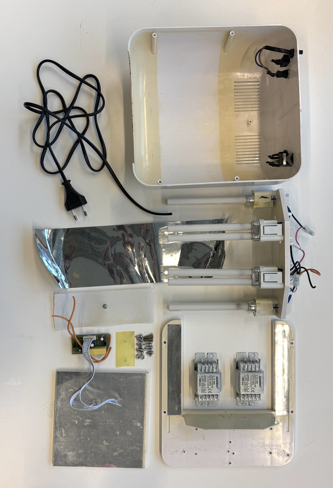
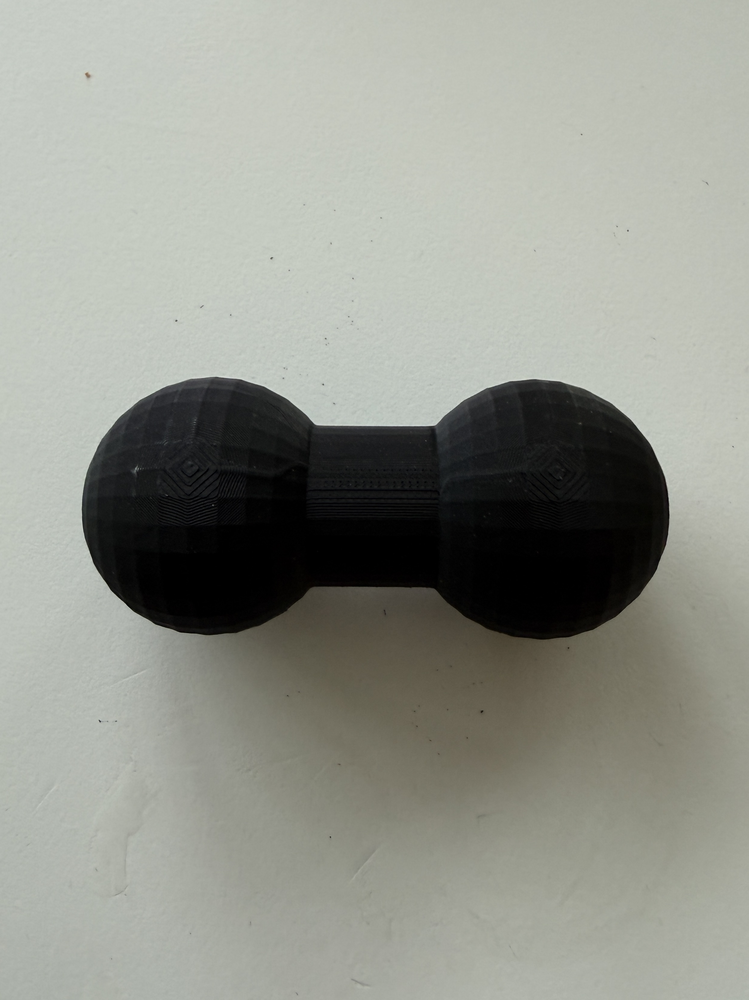
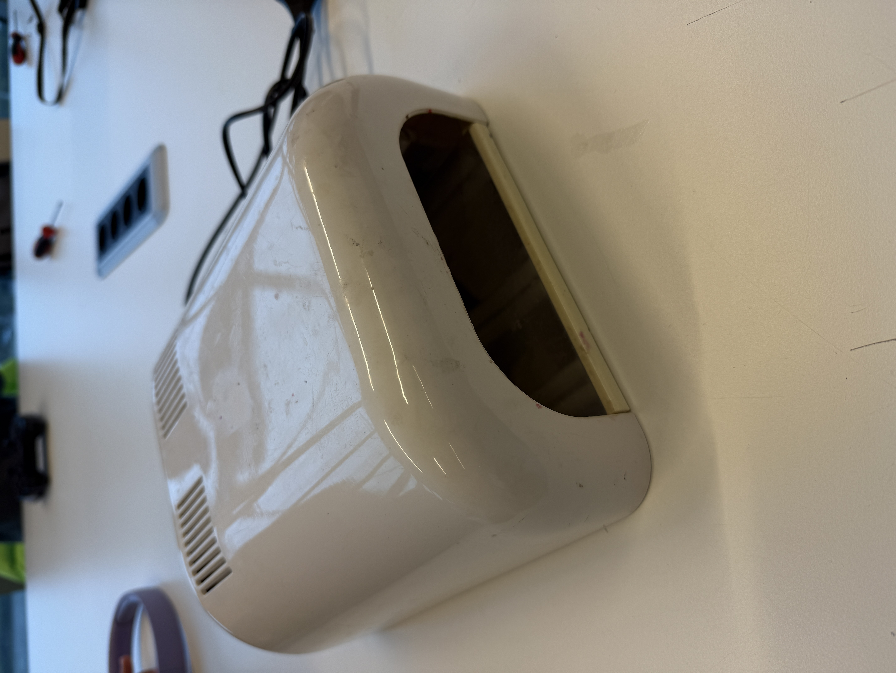
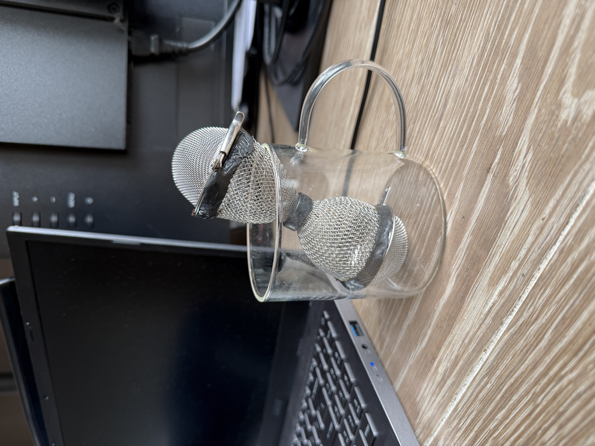
A dive in nature
A project of my own.
With these drawings I wanted to dive deeper into the world of nature. How is everything structured? Are there patterns? What does the future look like? Delving into this has taught me to pay more attention to details and to view things from a different perspective.
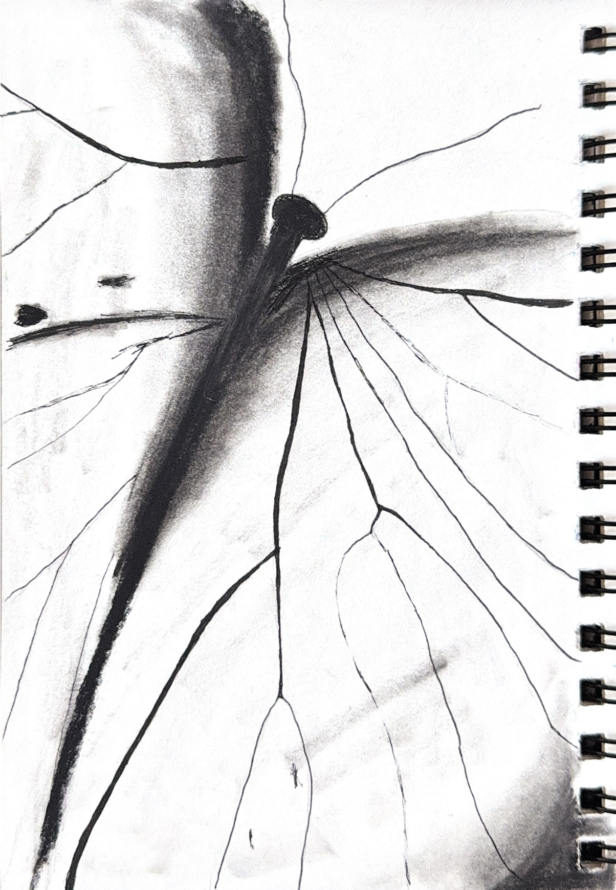
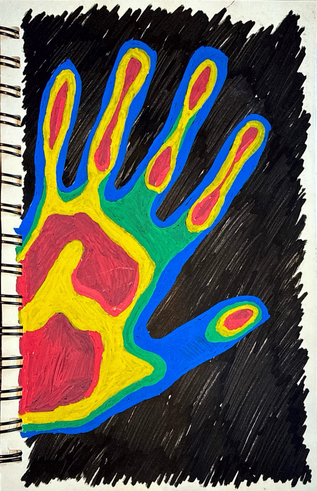
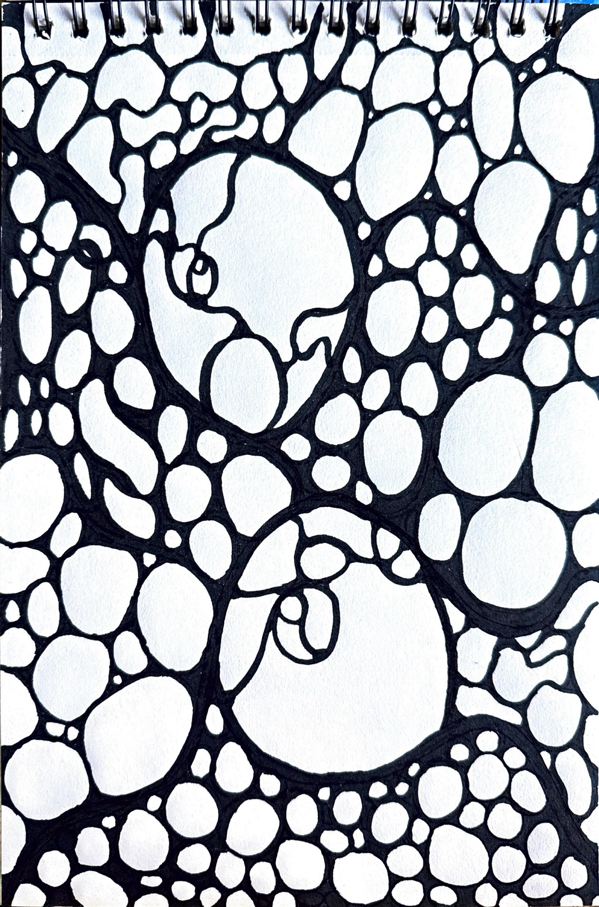
StimShower
"Design ways for people to express themselves and communicate through scent."
StimShower helps to communicate a person's level of sensory stimulation through scent. In addition, the concept serves as a form of self-medication. The scent is determined based on your needs and helps regulate these sensory inputs.
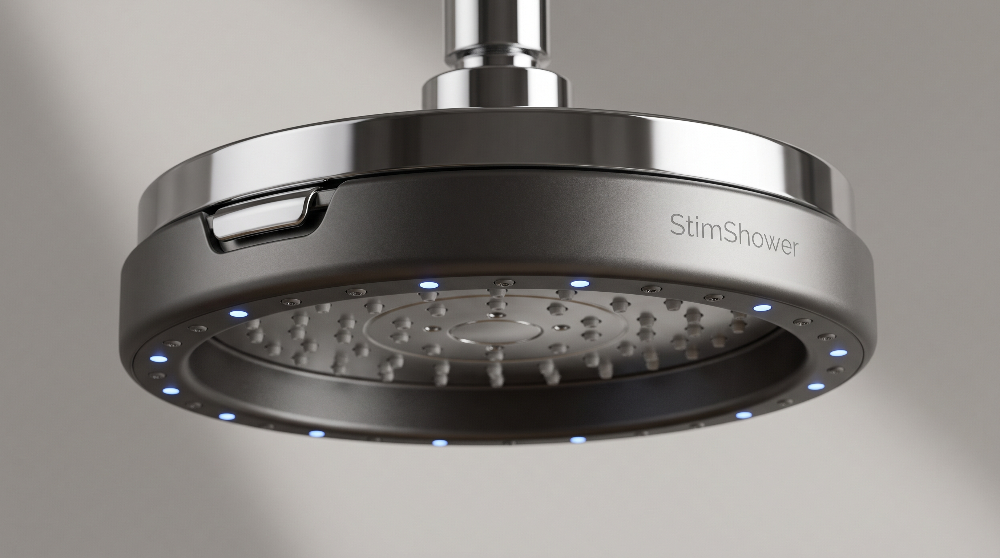
Workscape Box
"Develop an object that forces you to put yourself in someone else's shoes. Truly understanding one another. Pushing yourself to adopt new behavior."
For this assignment, we had to design an object for the handover between the morning and evening shifts in a hospital. The idea behind the Workscape Box is that one shift passes the box to the oncoming shift during the handover. Inside the box, you hear a high-, medium-, or low-activity soundscape, which reflects to the state of the day. In this way, you physically hand over the workloud to the other person and turn it into a dedicated moment. As a result, more attention is paid to the handover, allowing the oncoming shift to sense how busy it was for their colleagues.
My part in this project was to create the sounds for the soundscape and create the user scenario.
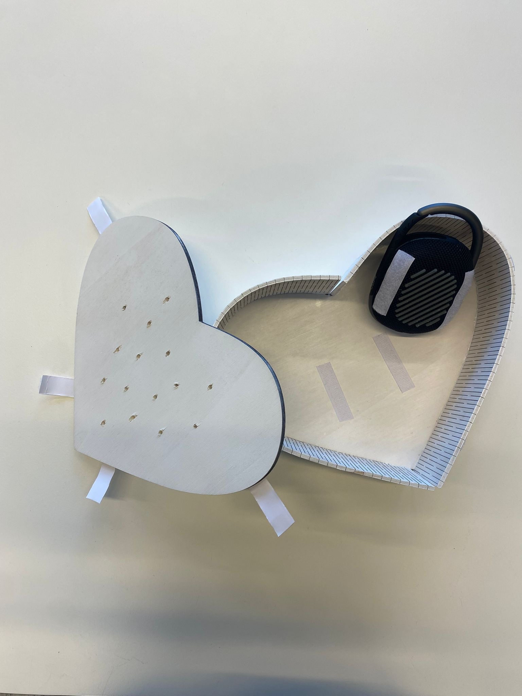
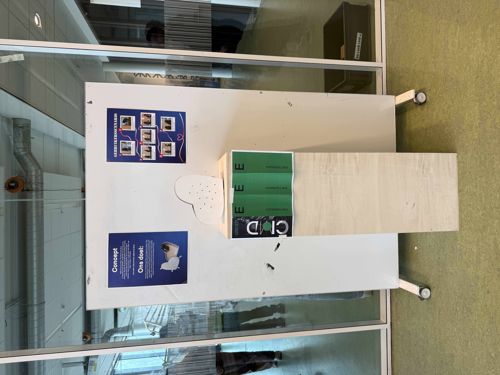
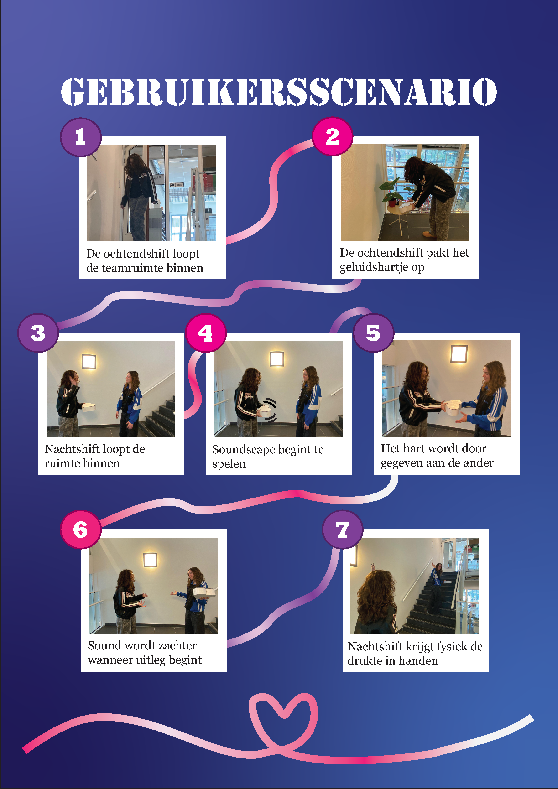